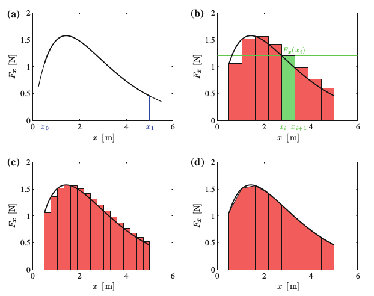

$F(x)$ fonksiyonunu bazen sembolik olarak entegre etmek zor olabilir. Bu durumlarda sayısal çözüm daha kullanışlı olabilir. Mesela $F(x)$'in $x_0$ ve $x_1$ arasındaki entegrali aslında bir alan hesabıdır, ve bu alanı, $x$ aralığını ufak parçalara bölerek, ve bu parçaları kullanarak yaklaşık bir alan hesabı yapıp sonuçları toplayarak elde edebiliriz.
$x_0$ ve $x_1$ arasını $N$ parçaya bölelim.

Kaynaklar
[1] Sorenssen, Elementary Mechanics Using Python